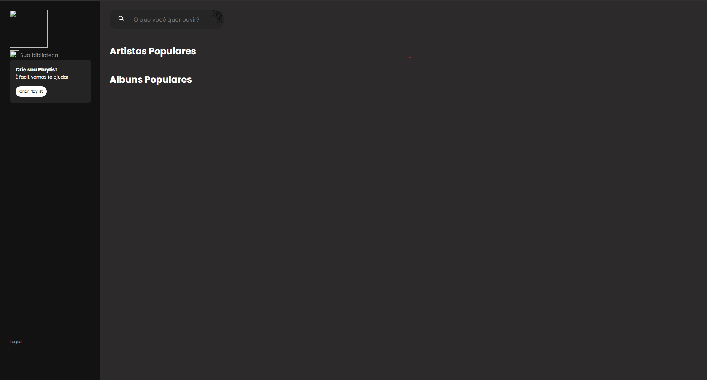

Projeto Tetris
Neste projeto busquei um pouco de desafio e fui atrás de criar um jogo funcional utilizando JAVA
Mateus
Neste projeto busquei um pouco de desafio e fui atrás de criar um jogo funcional utilizando JAVA
Neste projeto desenvolvi uma aplicação semelhante ao Spotify, querendo colocar nele uma tematica de halloween
